| trajectory_key | trajectory_display | best_overall | best_overall_rmse_m | best_overall_comp_time_ms | best_nr_family | best_nr_rmse_m | best_nmpc | best_nmpc_rmse_m | best_nr_minus_nmpc_m | best_nr_minus_nmpc_pct | |
|---|---|---|---|---|---|---|---|---|---|---|---|
| 0 | circle_horz | Circle Horizontal | NMPC ff | 0.102671 | 1.776955 | NR Enhanced workshop noff | 0.260071 | NMPC ff | 0.102671 | 0.157400 | 153.305451 |
| 1 | circle_vert | Circle Vertical | NMPC noff | 0.066442 | 1.853472 | NR Diff-Flat workshop noff | 0.104739 | NMPC noff | 0.066442 | 0.038297 | 57.640238 |
| 2 | fig8_horz | Fig8 Horizontal | NMPC ff | 0.067953 | 1.802991 | NR Diff-Flat workshop noff | 0.144321 | NMPC ff | 0.067953 | 0.076368 | 112.382592 |
| 3 | fig8_vert | Fig8 Vertical | NMPC ff | 0.075764 | 1.770831 | NR Diff-Flat workshop noff | 0.142565 | NMPC ff | 0.075764 | 0.066801 | 88.170843 |
| 4 | hover | Hover | NMPC ff | 0.258713 | 1.761421 | NR Diff-Flat baseline noff | 0.382799 | NMPC ff | 0.258713 | 0.124086 | 47.962894 |
| 5 | yaw_only | Yaw Only | NR Enhanced workshop noff | 0.048304 | 0.683106 | NR Enhanced workshop noff | 0.048304 | NMPC ff | 0.049210 | -0.000905 | -1.839828 |
Regular Trajectory Controller Matrix Above fig8_contraction
1 Scope
This report repeats the controller comparison workflow used for the contraction-family sweep, but on the regular trajectories that appear above fig8_contraction in the workspace trajectory list:
hoveryaw_onlycircle_horzcircle_vertfig8_horzfig8_vert
The comparison set is:
Standard NR:baseline/noff,baseline/ff,workshop/noff,workshop/ffNR Enhanced:baseline/noff,baseline/ff,workshop/noff,workshop/ffNR Diff-Flat:baseline/noff,baseline/ff,workshop/noff,workshop/ffNMPC:noff,ff
Tracked aggregate artifacts for this pass live in:
docs/generated/pre_fig8_matrix_20260402/
2 Executive Summary
The main one-page summary table is:
docs/generated/pre_fig8_matrix_20260402/executive_summary.csvdocs/generated/pre_fig8_matrix_20260402/executive_summary.md
Interpretation:
best_overallis the best measured configuration on each regular trajectory.best_nr_familyis the best result among the three Newton-Raphson families.best_nr_minus_nmpc_*shows how far the best NR-family result still is from the best NMPC result on that same trajectory.
3 Key Findings
NMPCis still the strongest controller on the regular-trajectory set overall. It winshover,circle_horz,circle_vert,fig8_horz, andfig8_vert, withffusually helping slightly on the horizontal/figure-eight cases.NR Enhanced workshop noffis the one clear non-NMPC win in this sweep. Onyaw_onlyit edges outNMPC ff, so the enhanced Newton-Raphson law is not uniformly dominated on the simpler regular trajectories.- Within the Newton-Raphson family, the best variant depends on trajectory class:
NR Enhanced workshop noffis the strongest NR-family result onyaw_onlyandcircle_horz.NR Diff-Flat workshop noffis the strongest NR-family result oncircle_vert,fig8_horz, andfig8_vert.NR Diff-Flat baseline noffis the best NR-family result onhover.
- Feedforward is not a universal improvement on these regular trajectories.
NMPC ffis beneficial on most of the non-hover regular paths, but the Newton-Raphson families often regress withff, especially in the workshop cases. The most extreme failure in this sweep isNR Diff-Flat workshop ffonhover, which diverges catastrophically and is therefore easy to spot in both the RMSE table and the trajectory gallery. - The regular-trajectory results therefore sharpen the earlier contraction-path conclusions:
Standard NR workshopremains the most reliable general-purpose structural improvement for the standard controller.NR Enhanced workshopis genuinely strong on some paths, but still does not dominate the other NR variants across the board.NR Diff-Flat workshopis highly competitive on the vertical and figure-eight regular paths, but not uniformly safer or better than the other families.
4 Aggregate Tables
4.1 Position RMSE
| trajectory_display | Standard NR baseline noff | Standard NR baseline ff | Standard NR workshop noff | Standard NR workshop ff | NR Enhanced baseline noff | NR Enhanced baseline ff | NR Enhanced workshop noff | NR Enhanced workshop ff | NR Diff-Flat baseline noff | NR Diff-Flat baseline ff | NR Diff-Flat workshop noff | NR Diff-Flat workshop ff | NMPC noff | NMPC ff | |
|---|---|---|---|---|---|---|---|---|---|---|---|---|---|---|---|
| 0 | Hover | 0.476653 | 0.475174 | 0.432116 | 0.428878 | 0.546792 | 0.538222 | 0.495054 | 0.495781 | 0.382799 | 0.398795 | 0.447791 | 357.142060 | 0.271912 | 0.258713 |
| 1 | Yaw Only | 0.159581 | 0.166314 | 0.101653 | 0.175308 | 0.170079 | 0.174216 | 0.048304 | 0.050770 | 0.091451 | 0.091643 | 0.054466 | 0.088704 | 0.053021 | 0.049210 |
| 2 | Circle Horizontal | 0.385689 | 0.385546 | 0.263959 | 0.280785 | 0.379733 | 0.396770 | 0.260071 | 0.281686 | 0.595158 | 0.634744 | 0.302692 | 0.314431 | 0.105440 | 0.102671 |
| 3 | Circle Vertical | 0.261516 | 0.260658 | 0.192265 | 0.166853 | 0.271803 | 0.270275 | 0.178182 | 0.172549 | 0.310903 | 0.341491 | 0.104739 | 0.119975 | 0.066442 | 0.074012 |
| 4 | Fig8 Horizontal | 0.352456 | 0.346801 | 0.214790 | 0.234825 | 0.358827 | 0.368289 | 0.234617 | 0.237652 | 0.260177 | 0.449533 | 0.144321 | 0.147615 | 0.068624 | 0.067953 |
| 5 | Fig8 Vertical | 0.354864 | 0.358293 | 0.260021 | 0.233461 | 0.351542 | 0.375210 | 0.232275 | 0.241454 | 0.362788 | 0.403856 | 0.142565 | 0.158878 | 0.075779 | 0.075764 |
4.2 Compute Time
| trajectory_display | Standard NR baseline noff | Standard NR baseline ff | Standard NR workshop noff | Standard NR workshop ff | NR Enhanced baseline noff | NR Enhanced baseline ff | NR Enhanced workshop noff | NR Enhanced workshop ff | NR Diff-Flat baseline noff | NR Diff-Flat baseline ff | NR Diff-Flat workshop noff | NR Diff-Flat workshop ff | NMPC noff | NMPC ff | |
|---|---|---|---|---|---|---|---|---|---|---|---|---|---|---|---|
| 0 | Hover | 0.255720 | 0.960531 | 0.302206 | 0.754161 | 0.597763 | 0.847877 | 0.661452 | 0.939283 | 0.751869 | 0.772025 | 0.738881 | 0.743103 | 1.736146 | 1.761421 |
| 1 | Yaw Only | 0.256111 | 0.650369 | 0.267677 | 0.763903 | 0.595016 | 0.869236 | 0.683106 | 1.005705 | 0.729631 | 0.751115 | 0.742011 | 0.895774 | 1.810753 | 1.930520 |
| 2 | Circle Horizontal | 0.262471 | 0.712708 | 0.324246 | 0.718134 | 0.586510 | 0.856372 | 0.638979 | 0.938448 | 0.747424 | 0.751201 | 0.737606 | 0.750743 | 1.836516 | 1.776955 |
| 3 | Circle Vertical | 0.264846 | 0.716771 | 0.318838 | 0.753457 | 0.595012 | 0.859805 | 0.665787 | 0.889194 | 0.759590 | 0.747690 | 0.757111 | 0.756404 | 1.853472 | 1.861415 |
| 4 | Fig8 Horizontal | 0.323131 | 0.723131 | 0.266565 | 0.727563 | 0.593433 | 0.866944 | 0.692012 | 0.979675 | 0.755195 | 0.763959 | 0.777659 | 0.741387 | 1.779799 | 1.802991 |
| 5 | Fig8 Vertical | 0.259780 | 0.742049 | 0.272992 | 0.745171 | 0.588669 | 0.813119 | 0.685904 | 0.912513 | 0.785866 | 0.760270 | 0.764515 | 0.750529 | 1.800290 | 1.770831 |
4.3 NR Workshop Deltas
| trajectory_key | trajectory_display | controller | ff_mode | baseline | workshop | delta_m | delta_pct | |
|---|---|---|---|---|---|---|---|---|
| 0 | circle_horz | Circle Horizontal | NR Diff-Flat | ff | 0.634744 | 0.314431 | -0.320313 | -50.463396 |
| 1 | circle_horz | Circle Horizontal | NR Diff-Flat | noff | 0.595158 | 0.302692 | -0.292466 | -49.140834 |
| 2 | circle_horz | Circle Horizontal | NR Enhanced | ff | 0.396770 | 0.281686 | -0.115083 | -29.005093 |
| 3 | circle_horz | Circle Horizontal | NR Enhanced | noff | 0.379733 | 0.260071 | -0.119662 | -31.512192 |
| 4 | circle_horz | Circle Horizontal | Standard NR | ff | 0.385546 | 0.280785 | -0.104760 | -27.171989 |
| 5 | circle_horz | Circle Horizontal | Standard NR | noff | 0.385689 | 0.263959 | -0.121730 | -31.561692 |
| 6 | circle_vert | Circle Vertical | NR Diff-Flat | ff | 0.341491 | 0.119975 | -0.221515 | -64.867158 |
| 7 | circle_vert | Circle Vertical | NR Diff-Flat | noff | 0.310903 | 0.104739 | -0.206164 | -66.311270 |
| 8 | circle_vert | Circle Vertical | NR Enhanced | ff | 0.270275 | 0.172549 | -0.097727 | -36.158150 |
| 9 | circle_vert | Circle Vertical | NR Enhanced | noff | 0.271803 | 0.178182 | -0.093620 | -34.444224 |
| 10 | circle_vert | Circle Vertical | Standard NR | ff | 0.260658 | 0.166853 | -0.093805 | -35.987598 |
| 11 | circle_vert | Circle Vertical | Standard NR | noff | 0.261516 | 0.192265 | -0.069251 | -26.480442 |
| 12 | fig8_horz | Fig8 Horizontal | NR Diff-Flat | ff | 0.449533 | 0.147615 | -0.301918 | -67.162695 |
| 13 | fig8_horz | Fig8 Horizontal | NR Diff-Flat | noff | 0.260177 | 0.144321 | -0.115856 | -44.529576 |
| 14 | fig8_horz | Fig8 Horizontal | NR Enhanced | ff | 0.368289 | 0.237652 | -0.130637 | -35.471302 |
| 15 | fig8_horz | Fig8 Horizontal | NR Enhanced | noff | 0.358827 | 0.234617 | -0.124210 | -34.615449 |
| 16 | fig8_horz | Fig8 Horizontal | Standard NR | ff | 0.346801 | 0.234825 | -0.111976 | -32.288339 |
| 17 | fig8_horz | Fig8 Horizontal | Standard NR | noff | 0.352456 | 0.214790 | -0.137666 | -39.059034 |
| 18 | fig8_vert | Fig8 Vertical | NR Diff-Flat | ff | 0.403856 | 0.158878 | -0.244978 | -60.659812 |
| 19 | fig8_vert | Fig8 Vertical | NR Diff-Flat | noff | 0.362788 | 0.142565 | -0.220224 | -60.703032 |
| 20 | fig8_vert | Fig8 Vertical | NR Enhanced | ff | 0.375210 | 0.241454 | -0.133756 | -35.648313 |
| 21 | fig8_vert | Fig8 Vertical | NR Enhanced | noff | 0.351542 | 0.232275 | -0.119267 | -33.926774 |
| 22 | fig8_vert | Fig8 Vertical | Standard NR | ff | 0.358293 | 0.233461 | -0.124832 | -34.840844 |
| 23 | fig8_vert | Fig8 Vertical | Standard NR | noff | 0.354864 | 0.260021 | -0.094843 | -26.726639 |
| 24 | hover | Hover | NR Diff-Flat | ff | 0.398795 | 357.142060 | 356.743265 | 89455.188446 |
| 25 | hover | Hover | NR Diff-Flat | noff | 0.382799 | 0.447791 | 0.064992 | 16.978168 |
| 26 | hover | Hover | NR Enhanced | ff | 0.538222 | 0.495781 | -0.042440 | -7.885295 |
| 27 | hover | Hover | NR Enhanced | noff | 0.546792 | 0.495054 | -0.051738 | -9.462103 |
| 28 | hover | Hover | Standard NR | ff | 0.475174 | 0.428878 | -0.046296 | -9.743016 |
| 29 | hover | Hover | Standard NR | noff | 0.476653 | 0.432116 | -0.044537 | -9.343782 |
| 30 | yaw_only | Yaw Only | NR Diff-Flat | ff | 0.091643 | 0.088704 | -0.002939 | -3.207315 |
| 31 | yaw_only | Yaw Only | NR Diff-Flat | noff | 0.091451 | 0.054466 | -0.036985 | -40.442790 |
| 32 | yaw_only | Yaw Only | NR Enhanced | ff | 0.174216 | 0.050770 | -0.123446 | -70.858012 |
| 33 | yaw_only | Yaw Only | NR Enhanced | noff | 0.170079 | 0.048304 | -0.121774 | -71.598804 |
| 34 | yaw_only | Yaw Only | Standard NR | ff | 0.166314 | 0.175308 | 0.008995 | 5.408264 |
| 35 | yaw_only | Yaw Only | Standard NR | noff | 0.159581 | 0.101653 | -0.057928 | -36.300192 |
4.4 Feedforward Deltas
| trajectory_key | trajectory_display | controller | nr_profile | noff | ff | delta_ff_minus_noff_m | delta_ff_minus_noff_pct | |
|---|---|---|---|---|---|---|---|---|
| 0 | circle_horz | Circle Horizontal | NMPC | - | 0.105440 | 0.102671 | -0.002769 | -2.626211 |
| 1 | circle_horz | Circle Horizontal | NR Diff-Flat | baseline | 0.595158 | 0.634744 | 0.039586 | 6.651317 |
| 2 | circle_horz | Circle Horizontal | NR Diff-Flat | workshop | 0.302692 | 0.314431 | 0.011738 | 3.877913 |
| 3 | circle_horz | Circle Horizontal | NR Enhanced | baseline | 0.379733 | 0.396770 | 0.017037 | 4.486537 |
| 4 | circle_horz | Circle Horizontal | NR Enhanced | workshop | 0.260071 | 0.281686 | 0.021616 | 8.311424 |
| 5 | circle_horz | Circle Horizontal | Standard NR | baseline | 0.385689 | 0.385546 | -0.000143 | -0.037101 |
| 6 | circle_horz | Circle Horizontal | Standard NR | workshop | 0.263959 | 0.280785 | 0.016826 | 6.374622 |
| 7 | circle_vert | Circle Vertical | NMPC | - | 0.066442 | 0.074012 | 0.007570 | 11.392976 |
| 8 | circle_vert | Circle Vertical | NR Diff-Flat | baseline | 0.310903 | 0.341491 | 0.030587 | 9.838231 |
| 9 | circle_vert | Circle Vertical | NR Diff-Flat | workshop | 0.104739 | 0.119975 | 0.015236 | 14.546595 |
| 10 | circle_vert | Circle Vertical | NR Enhanced | baseline | 0.271803 | 0.270275 | -0.001527 | -0.561947 |
| 11 | circle_vert | Circle Vertical | NR Enhanced | workshop | 0.178182 | 0.172549 | -0.005634 | -3.161710 |
| 12 | circle_vert | Circle Vertical | Standard NR | baseline | 0.261516 | 0.260658 | -0.000858 | -0.328100 |
| 13 | circle_vert | Circle Vertical | Standard NR | workshop | 0.192265 | 0.166853 | -0.025412 | -13.217136 |
| 14 | fig8_horz | Fig8 Horizontal | NMPC | - | 0.068624 | 0.067953 | -0.000671 | -0.977269 |
| 15 | fig8_horz | Fig8 Horizontal | NR Diff-Flat | baseline | 0.260177 | 0.449533 | 0.189356 | 72.779812 |
| 16 | fig8_horz | Fig8 Horizontal | NR Diff-Flat | workshop | 0.144321 | 0.147615 | 0.003293 | 2.281955 |
| 17 | fig8_horz | Fig8 Horizontal | NR Enhanced | baseline | 0.358827 | 0.368289 | 0.009462 | 2.636823 |
| 18 | fig8_horz | Fig8 Horizontal | NR Enhanced | workshop | 0.234617 | 0.237652 | 0.003034 | 1.293356 |
| 19 | fig8_horz | Fig8 Horizontal | Standard NR | baseline | 0.352456 | 0.346801 | -0.005655 | -1.604462 |
| 20 | fig8_horz | Fig8 Horizontal | Standard NR | workshop | 0.214790 | 0.234825 | 0.020035 | 9.327530 |
| 21 | fig8_vert | Fig8 Vertical | NMPC | - | 0.075779 | 0.075764 | -0.000016 | -0.020884 |
| 22 | fig8_vert | Fig8 Vertical | NR Diff-Flat | baseline | 0.362788 | 0.403856 | 0.041067 | 11.319861 |
| 23 | fig8_vert | Fig8 Vertical | NR Diff-Flat | workshop | 0.142565 | 0.158878 | 0.016313 | 11.442294 |
| 24 | fig8_vert | Fig8 Vertical | NR Enhanced | baseline | 0.351542 | 0.375210 | 0.023667 | 6.732418 |
| 25 | fig8_vert | Fig8 Vertical | NR Enhanced | workshop | 0.232275 | 0.241454 | 0.009178 | 3.951502 |
| 26 | fig8_vert | Fig8 Vertical | Standard NR | baseline | 0.354864 | 0.358293 | 0.003429 | 0.966367 |
| 27 | fig8_vert | Fig8 Vertical | Standard NR | workshop | 0.260021 | 0.233461 | -0.026560 | -10.214529 |
| 28 | hover | Hover | NMPC | - | 0.271912 | 0.258713 | -0.013199 | -4.854191 |
| 29 | hover | Hover | NR Diff-Flat | baseline | 0.382799 | 0.398795 | 0.015996 | 4.178817 |
| 30 | hover | Hover | NR Diff-Flat | workshop | 0.447791 | 357.142060 | 356.694269 | 79656.366421 |
| 31 | hover | Hover | NR Enhanced | baseline | 0.546792 | 0.538222 | -0.008570 | -1.567389 |
| 32 | hover | Hover | NR Enhanced | workshop | 0.495054 | 0.495781 | 0.000727 | 0.146912 |
| 33 | hover | Hover | Standard NR | baseline | 0.476653 | 0.475174 | -0.001479 | -0.310328 |
| 34 | hover | Hover | Standard NR | workshop | 0.432116 | 0.428878 | -0.003238 | -0.749343 |
| 35 | yaw_only | Yaw Only | NMPC | - | 0.053021 | 0.049210 | -0.003811 | -7.188375 |
| 36 | yaw_only | Yaw Only | NR Diff-Flat | baseline | 0.091451 | 0.091643 | 0.000192 | 0.210462 |
| 37 | yaw_only | Yaw Only | NR Diff-Flat | workshop | 0.054466 | 0.088704 | 0.034238 | 62.862559 |
| 38 | yaw_only | Yaw Only | NR Enhanced | baseline | 0.170079 | 0.174216 | 0.004138 | 2.432715 |
| 39 | yaw_only | Yaw Only | NR Enhanced | workshop | 0.048304 | 0.050770 | 0.002466 | 5.104481 |
| 40 | yaw_only | Yaw Only | Standard NR | baseline | 0.159581 | 0.166314 | 0.006733 | 4.218980 |
| 41 | yaw_only | Yaw Only | Standard NR | workshop | 0.101653 | 0.175308 | 0.073656 | 72.458004 |
4.5 Best-by-Trajectory Snapshot
| trajectory_key | trajectory_display | best_result | Position_RMSE_m | Comp_Time_ms | |
|---|---|---|---|---|---|
| 0 | circle_horz | Circle Horizontal | NMPC ff | 0.102671 | 1.776955 |
| 1 | circle_vert | Circle Vertical | NMPC noff | 0.066442 | 1.853472 |
| 2 | fig8_horz | Fig8 Horizontal | NMPC ff | 0.067953 | 1.802991 |
| 3 | fig8_vert | Fig8 Vertical | NMPC ff | 0.075764 | 1.770831 |
| 4 | hover | Hover | NMPC ff | 0.258713 | 1.761421 |
| 5 | yaw_only | Yaw Only | NR Enhanced workshop noff | 0.048304 | 0.683106 |
5 Plots
Generated plots live in:
docs/generated/pre_fig8_matrix_20260402/plots/
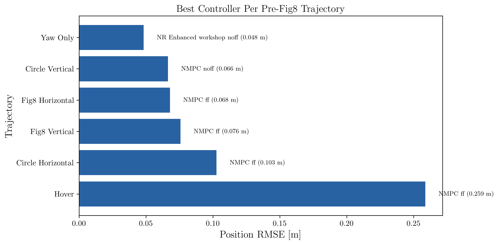
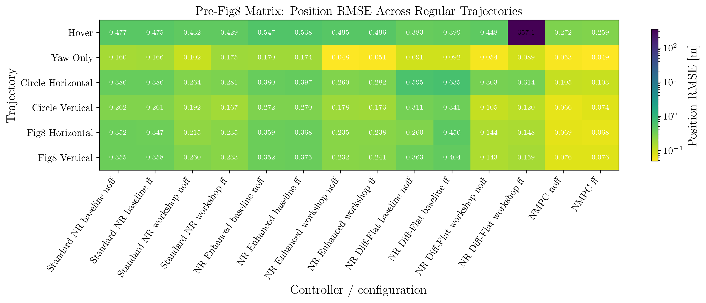
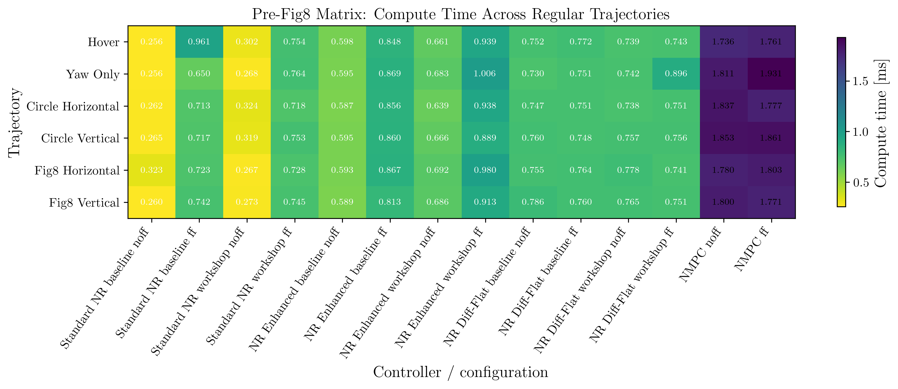
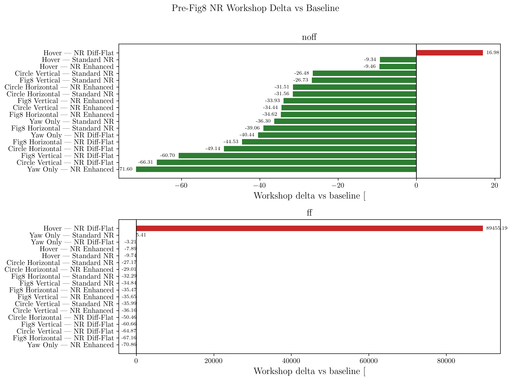
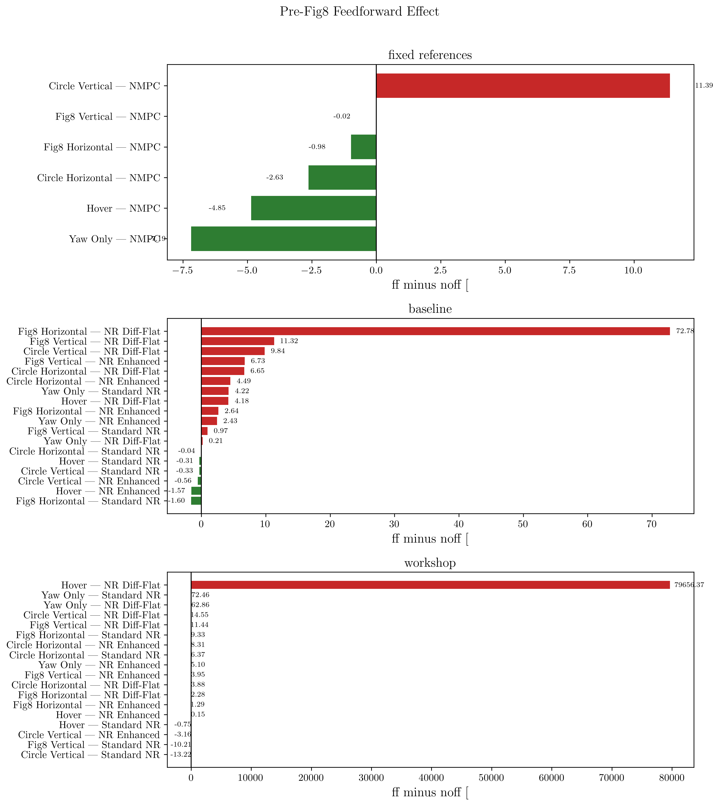
6 Reference vs Actual Galleries
These per-trajectory grids compare the flown path against the aligned reference path for every controller/configuration in the matrix.
6.1 Hover
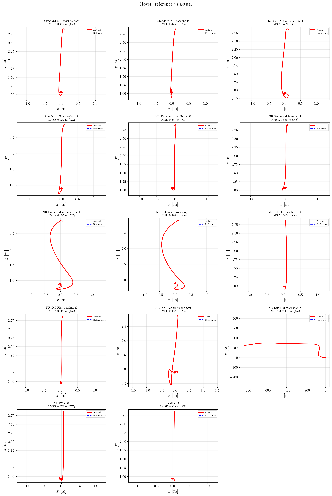
6.2 Yaw Only
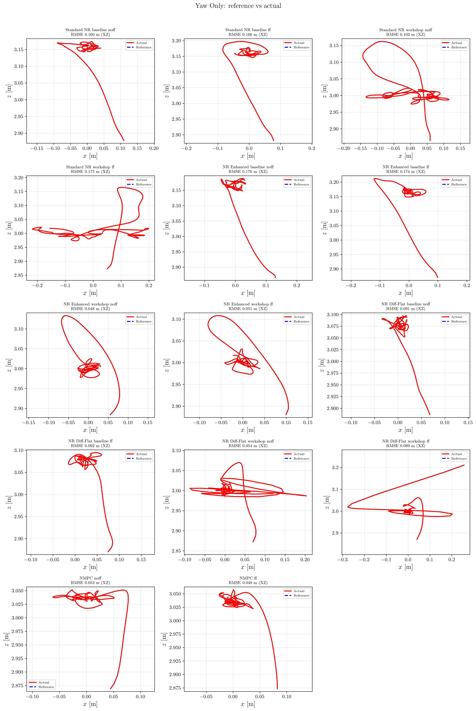
6.3 Circle Horizontal
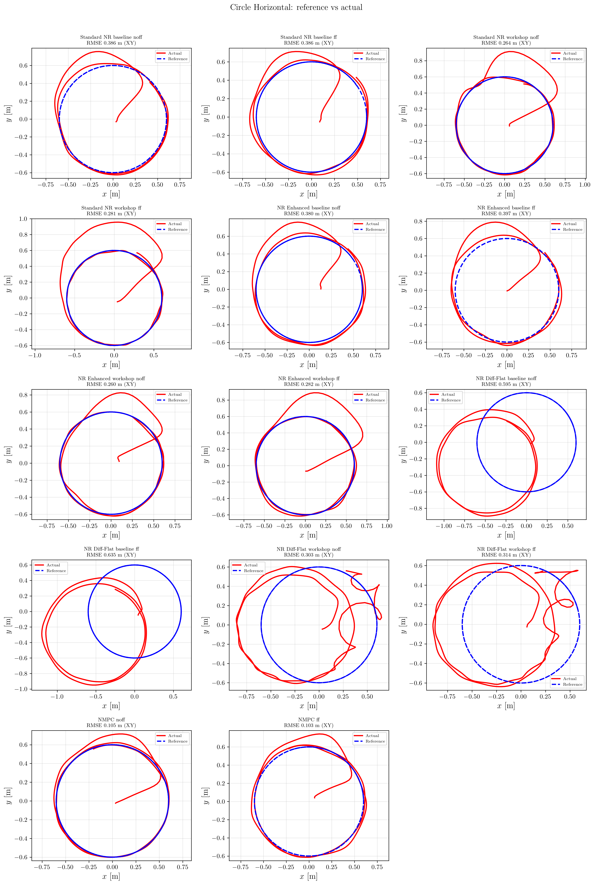
6.4 Circle Vertical
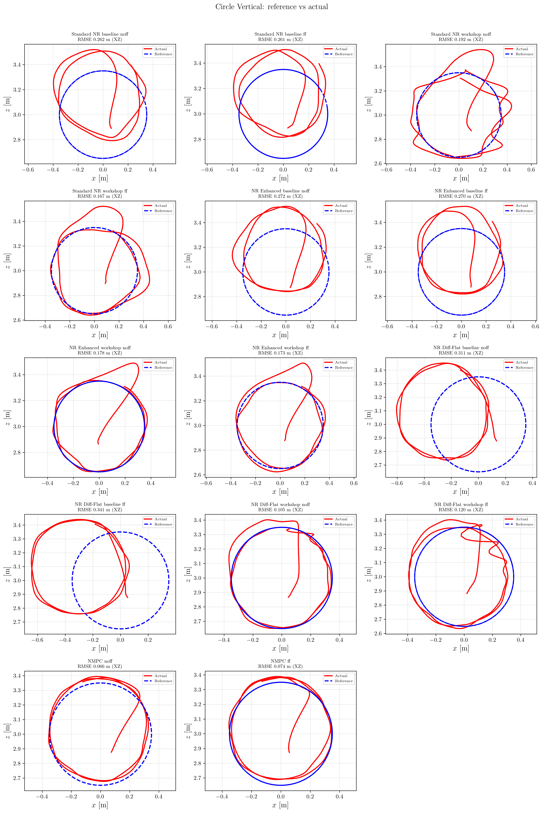
6.5 Fig8 Horizontal
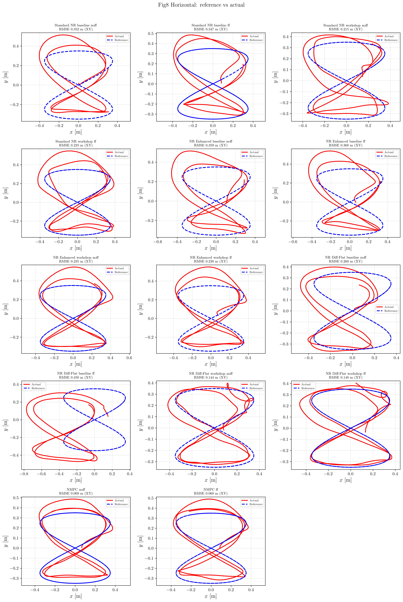
6.6 Fig8 Vertical
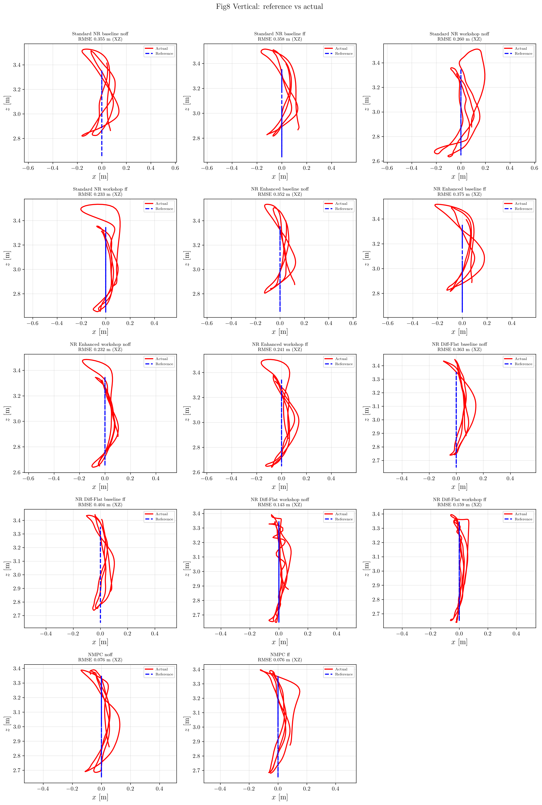
7 NR Enhanced Retuning Note
This pass did not land a new NR Enhanced tune.
On April 2, 2026, exploratory higher-alpha and shorter-lookahead variants were tested first on circle_horz before widening the sweep. Those variants did not beat the current Python workshop profile, so no additional NR Enhanced controller change was committed from that tuning thread. The regular-trajectory matrix in this document therefore reflects the existing validated baseline/workshop split, not an unvalidated retune.